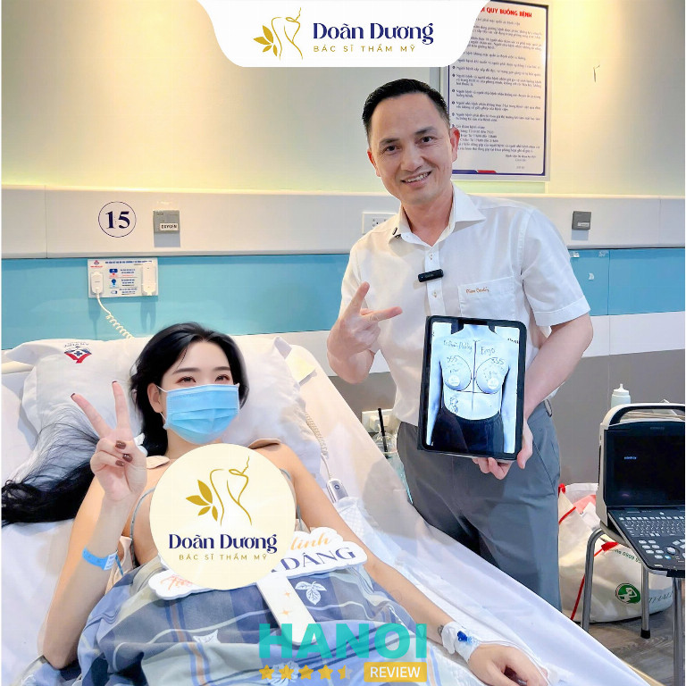
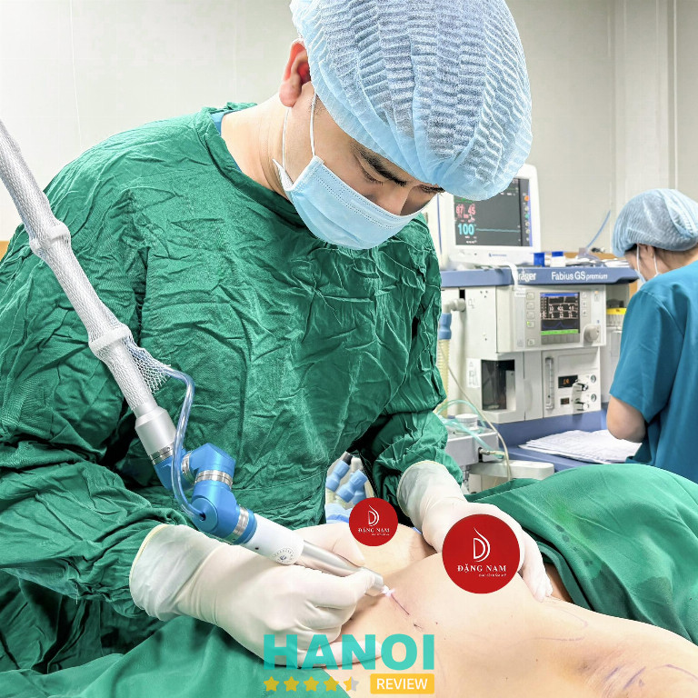
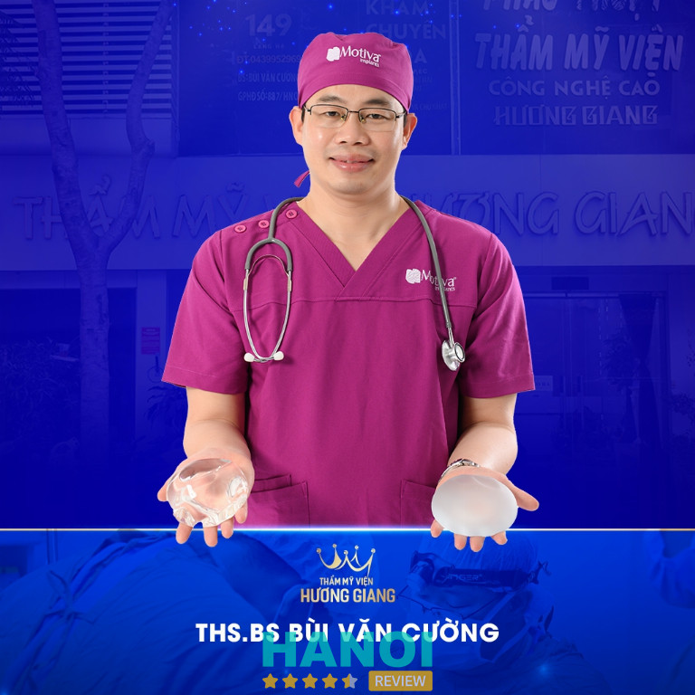

10 bác sĩ nâng ngực giỏi ở Hà Nội được nhiều người tin tưởng lựa chọn
Lựa chọn bác sĩ thực hiện nâng ngực là quyết định có ảnh hưởng trực tiếp đến kết quả thẩm mỹ và sức khỏe lâu dài. Nhu cầu nâng ngực ngày càng phổ biến, tuy nhiên không phải ai cũng có đủ thông tin để đánh giá khách quan một bác sĩ thẩm mỹ. Với mục tiêu an toàn và hiệu quả, việc tìm đúng bác sĩ nâng ngực giỏi ở Hà Nội cần dựa trên năng lực chuyên môn, kinh nghiệm, và tiêu chuẩn hành nghề rõ ràng.
Top 10 bác sĩ nâng ngực giỏi tại Hà Nội được khách hàng đánh giá cao
Hà Nội là nơi quy tụ nhiều bác sĩ thẩm mỹ tay nghề cao. Dưới đây là những cái tên nổi bật nhờ kinh nghiệm, kỹ thuật và sự tận tâm với nghề.
PGS.TS. Nguyễn Hồng Hà
Trong lĩnh vực phẫu thuật thẩm mỹ tại Việt Nam, PGS.TS. Nguyễn Hồng Hà được đánh giá là một bác sĩ nâng ngực giỏi ở Hà Nội, với nhiều năm kinh nghiệm và bề dày thành tựu quốc tế. Ông hiện là Trưởng khoa Phẫu thuật hàm mặt, Tạo hình và Thẩm mỹ tại Bệnh viện Hữu nghị Việt Đức, đồng thời giữ vai trò Phó Chủ tịch Đối ngoại của Hội Phẫu thuật Tạo hình Thẩm mỹ Việt Nam (VSAPS).
Với nền tảng chuyên môn vững chắc, bác sĩ Hà từng tu nghiệp tại các trung tâm phẫu thuật uy tín hàng đầu như Đại học Yale, Mayo Clinic (Hoa Kỳ), và là giảng viên thỉnh giảng tại nhiều trường y lớn trong nước. Ông là người tiên phong trong việc ứng dụng kỹ thuật nâng ngực nội soi qua đường nách, giúp giảm thiểu sẹo, hạn chế xâm lấn và bảo toàn tuyến vú cho phụ nữ trẻ Việt Nam.
Một số thế mạnh nổi bật của bác sĩ Nguyễn Hồng Hà:
- Kinh nghiệm hơn 25 năm trong phẫu thuật tạo hình thẩm mỹ
- Thành thạo nhiều kỹ thuật nâng ngực: nội soi, đặt túi dưới tuyến – dưới cơ – Dual-plan
- Tỉ lệ biến chứng rất thấp: chảy máu <0,5%, co thắt bao xơ nặng <1%
- Áp dụng phương pháp hiện đại, phù hợp sinh lý người Việt và thẩm mỹ Á Đông
- Giữ nhiều chức vụ quan trọng trong các hội nghề nghiệp trong và ngoài nước
Bệnh nhân có thể gặp trực tiếp bác sĩ Hà tại Bệnh viện Hữu nghị Việt Đức (phòng khám số 12 và 256 nhà C2) hoặc liên hệ qua Facebook, điện thoại cá nhân để được tư vấn cụ thể. Với sự tận tâm, kỹ thuật cao và tư duy thẩm mỹ tinh tế, ông luôn là lựa chọn hàng đầu cho những ai mong muốn phẫu thuật nâng ngực an toàn, hiệu quả và lâu dài.
Nếu bạn đang tìm kiếm một chuyên gia nâng ngực hàng đầu tại Hà Nội có chuyên môn và kinh nghiệm thực tiễn vững chắc, hãy cân nhắc gặp trực tiếp PGS.TS. Nguyễn Hồng Hà để được tư vấn kỹ lưỡng và đưa ra phương án phù hợp nhất với nhu cầu cá nhân.
PGS.TS. Nguyễn Hồng Hà hiện đang công tác tại Bệnh viện Hữu nghị Việt Đức, một trong những bệnh viện đầu ngành về phẫu thuật tạo hình thẩm mỹ tại Việt Nam. Bên cạnh đó, bác sĩ còn tham gia khám và tư vấn tại một số phòng khám thẩm mỹ uy tín ở Hà Nội. Để được tư vấn trực tiếp và đặt lịch với bác sĩ, bạn nên liên hệ trước qua các kênh chính thức để đảm bảo thời gian và chất lượng phục vụ tốt nhất.
Thông tin liên hệ:
- Địa chỉ: Bệnh viện Hữu nghị Việt Đức, Số 40 Tràng Thi, P. Hoàn Kiếm, Hà Nội
- Điện thoại: 0866 900 800
- Facebook: fb.com/100063958449277
Tiến sĩ Bác sĩ Tống Thanh Hải
Trong lĩnh vực phẫu thuật tạo hình thẩm mỹ tại Hà Nội, Tiến sĩ Bác sĩ Tống Thanh Hải là một trong những cái tên tiêu biểu được đông đảo khách hàng tin tưởng, đặc biệt trong các ca nâng ngực. Với gần 20 năm kinh nghiệm, ông không chỉ sở hữu chuyên môn vững vàng mà còn để lại dấu ấn qua hàng chục nghìn ca phẫu thuật thành công, mang lại vóc dáng tự tin và thay đổi tích cực cho nhiều người.
Tốt nghiệp và được đào tạo bài bản tại Học viện Quân y, bác sĩ Hải hiện là Phó Giám đốc Trung tâm Phẫu thuật Tạo hình Thẩm mỹ và Tái tạo tại Bệnh viện Bỏng quốc gia Lê Hữu Trác. Ông đồng thời là giám đốc chuyên môn tại Thẩm mỹ viện Như Hoa – nơi tiếp nhận hàng trăm lượt tư vấn thẩm mỹ mỗi tháng. Trong lĩnh vực nâng ngực, bác sĩ Hải nổi bật nhờ kỹ thuật nội soi tiên tiến, thao tác tỉ mỉ, chú trọng an toàn và thẩm mỹ tự nhiên.
Một số điểm nổi bật trong hành trình và chuyên môn của Tiến sĩ Bác sĩ Tống Thanh Hải:
- Gần 20 năm kinh nghiệm chuyên sâu trong lĩnh vực phẫu thuật tạo hình và nâng ngực.
- Tốt nghiệp Tiến sĩ chuyên ngành phẫu thuật thẩm mỹ từ năm 2009, được đào tạo tại Singapore.
- Đảm nhiệm chức vụ Phó Giám đốc Trung tâm Phẫu thuật Tạo hình tại Bệnh viện Bỏng quốc gia.
- Kỹ thuật nâng ngực nội soi hiện đại, tối ưu hóa kết quả và hạn chế biến chứng.
- Có khả năng đánh giá cơ địa, lựa chọn túi ngực phù hợp và phẫu thuật cá nhân hóa.
- Được nhiều khách hàng và đồng nghiệp đánh giá cao về tay nghề cũng như thái độ tận tâm.
Bác sĩ Tống Thanh Hải không chỉ nổi bật với chuyên môn mà còn là người thầy trong công tác đào tạo thế hệ bác sĩ thẩm mỹ mới tại Học viện Quân y. Hiện tại, để khám trực tiếp với bác sĩ, khách hàng cần liên hệ trước do lịch làm việc ngoài giờ hành chính và lượng khách đông. Các ca phẫu thuật nâng ngực được thực hiện tại bệnh viện theo đúng quy định của Bộ Y tế, đảm bảo tiêu chuẩn an toàn tuyệt đối.
Nếu bạn đang tìm kiếm bác sĩ phẫu thuật nâng ngực uy tín ở Hà Nội với tay nghề vững vàng, quy trình chuyên nghiệp và kết quả đẹp tự nhiên, Tiến sĩ Bác sĩ Tống Thanh Hải chính là một lựa chọn đáng cân nhắc. Hãy liên hệ đặt lịch trước để được tư vấn kỹ lưỡng và sắp xếp thời gian khám phù hợp với bác sĩ.
Tiến sĩ, Bác sĩ Tống Thanh Hải hiện đang làm việc tại Thẩm mỹ Như Hoa – một trong những địa chỉ thẩm mỹ uy tín tại Hà Nội. Để được tư vấn cụ thể về dịch vụ nâng ngực cũng như giải đáp mọi thắc mắc, bạn có thể liên hệ trực tiếp với Thẩm mỹ Như Hoa qua các kênh thông tin chính thức.
Thông tin liên hệ:
- Địa chỉ: Số 24 Trung Hòa, P. Yên Hòa, Hà Nội
- Điện thoại: 0974 062 222
- Email: thammynhuhoa24@gmail.com
- Website: thammynhuhoa.vn
- Facebook: fb.com/thammynhuhoa.vn
Thạc sĩ, Bác sĩ Nguyễn Hữu Tùng
Trong danh sách những bác sĩ chuyên nâng ngực chất lượng tại Hà Nội, Thạc sĩ, Bác sĩ Nguyễn Hữu Tùng là cái tên được nhiều người nhắc đến với sự tin tưởng và đánh giá cao. Hiện đang công tác tại Bệnh viện Đa khoa Hồng Ngọc, bác sĩ Tùng chuyên sâu trong lĩnh vực nâng ngực nội soi – một phương pháp hiện đại, yêu cầu kỹ thuật cao và kinh nghiệm dày dặn.
Với nền tảng đào tạo bài bản từ Đại học Y Pavlov (Nga) và quá trình tu nghiệp nâng cao tại Hàn Quốc và Hoa Kỳ, bác sĩ Tùng sở hữu chuyên môn vững vàng trong lĩnh vực phẫu thuật thẩm mỹ tạo hình. Từ năm 2018 đến nay, ông giữ vai trò bác sĩ phẫu thuật thẩm mỹ tại Bệnh viện Hồng Ngọc, nơi ông phát triển thế mạnh về nâng ngực nội soi, chỉnh sửa ngực sa trễ và phì đại.
Dưới đây là những điểm nổi bật giúp bác sĩ Nguyễn Hữu Tùng được đánh giá là bác sĩ nâng ngực giỏi ở Hà Nội:
- Chuyên môn sâu: Tốt nghiệp và tu nghiệp tại nhiều quốc gia có nền y học phát triển như Nga, Hàn Quốc, Mỹ.
- Kỹ thuật hiện đại: Thành thạo phương pháp nâng ngực nội soi – ít xâm lấn, hồi phục nhanh, tính thẩm mỹ cao.
- Kinh nghiệm thực tế: Hơn 6 năm công tác tại khoa Phẫu thuật Thẩm mỹ – Bệnh viện Hồng Ngọc.
- Cơ sở vật chất hỗ trợ: Làm việc tại các cơ sở hiện đại tại quận Nam Từ Liêm và quận Ba Đình, thuận tiện cho bệnh nhân đến tư vấn và theo dõi.
- Đạo đức nghề nghiệp: Luôn đặt sự an toàn và mong muốn của khách hàng lên hàng đầu.
Nếu bạn đang tìm kiếm một bác sĩ chỉnh hình ngực uy tín tại Hà Nội với tay nghề vững vàng và dịch vụ chăm sóc chuyên nghiệp, bác sĩ Nguyễn Hữu Tùng là lựa chọn đáng cân nhắc. Từ những ca nâng ngực nội soi thẩm mỹ đến các trường hợp tái tạo do dị tật bẩm sinh hoặc sau điều trị bệnh lý, bác sĩ luôn mang đến kết quả hài hòa, an toàn và tự nhiên cho khách hàng.
Hiện tại, bác sĩ Nguyễn Hữu Tùng trực tiếp thăm khám và thực hiện phẫu thuật tại hai cơ sở thuộc Bệnh viện Hồng Ngọc. Thời gian làm việc linh hoạt từ 7h30 đến 18h00 mỗi ngày, bao gồm cả cuối tuần, giúp khách hàng dễ dàng sắp xếp lịch hẹn khám và tư vấn.
Thông tin liên hệ:
- Địa chỉ: Số 55 Phố Yên Ninh, P. Ba Đình, Hà Nội
- Điện thoại: 024 3927 5568
- Email: info@hongngochospital.vn
- Website: hongngochospital.vn
- Facebook: fb.com/BenhvienHongNgoc
Bác sĩ Lê Hữu Điền
Trong lĩnh vực phẫu thuật thẩm mỹ tại Hà Nội, việc lựa chọn bác sĩ nâng ngực giỏi, có tay nghề và kinh nghiệm là yếu tố then chốt để đảm bảo an toàn và hiệu quả.
Trong số những cái tên được giới chuyên môn và khách hàng đánh giá cao, Thạc sĩ, Bác sĩ Lê Hữu Điền là một trong những bác sĩ tạo hình thẩm mỹ vùng ngực tại Hà Nội với hơn 15 năm kinh nghiệm chuyên sâu trong lĩnh vực phẫu thuật tạo hình thẩm mỹ.
Tốt nghiệp chuyên ngành Ngoại tổng quát và Phẫu thuật nội soi tại Đại học Y Hà Nội, bác sĩ Điền tiếp tục học chuyên khoa Phẫu thuật tạo hình thẩm mỹ tại chính ngôi trường này. Ông từng giữ vị trí Trưởng khoa Phẫu thuật tạo hình thẩm mỹ tại các bệnh viện lớn như Tràng An, Thu Cúc, Bảo Sơn.
Bên cạnh đó, ông thường xuyên tham gia các chương trình đào tạo chuyên sâu trong nước và quốc tế như ISAP, KCCS, đồng thời là thành viên tích cực của các tổ chức thiện nguyện như OSCA, Smile Train…
Một số thế mạnh nổi bật:
- Trên 15 năm kinh nghiệm phẫu thuật thẩm mỹ, đặc biệt là nâng ngực nội soi, xử lý ngực sa trễ, hút mỡ tạo hình…
- Giám đốc chuyên môn Trung tâm Phẫu thuật tạo hình thẩm mỹ công nghệ cao DrD – Bệnh viện Đông Đô.
- Được đánh giá cao về kỹ thuật, tư duy thẩm mỹ và tư vấn cẩn trọng.
Tại Trung tâm DrD, ThS.BS Điền xây dựng quy trình phẫu thuật bài bản, ứng dụng công nghệ hiện đại, đảm bảo hiệu quả thẩm mỹ cao và an toàn tuyệt đối cho từng khách hàng.
Bạn có thể thăm khám trực tiếp với ThS.BS Lê Hữu Điền tại Khoa Phẫu thuật Tạo hình Thẩm mỹ DrD – Bệnh viện Đông Đô, từ thứ 2 đến thứ 7, 7h00–19h30.
Thông tin liên hệ:
- Địa chỉ: Tầng 8, 05 Xã Đàn, Phương Liên, Đống Đa, Hà Nội
- Điện thoại: 1900 068 668
- Email: tuvan.bsdien@gmail.com
- Website: bacsidien.vn
- Facebook: fb.com/bacsyDien
Bác sĩ Nguyễn Cao Ly
Với hơn 20 năm kinh nghiệm trong lĩnh vực phẫu thuật thẩm mỹ, bác sĩ Nguyễn Cao Ly là một trong những bác sĩ nâng ngực giỏi ở Hà Nội được đông đảo khách hàng tin tưởng. Không chỉ sở hữu tay nghề vững vàng, bác sĩ còn nổi bật với việc ứng dụng thành công phương pháp nâng ngực tạo khe Y-line – kỹ thuật hiện đại mang lại vòng 1 căng tròn, tự nhiên và quyến rũ.
Bác sĩ Cao Ly từng tham gia nhiều hội thảo chuyên ngành tại châu Âu và các quốc gia có nền thẩm mỹ tiên tiến, từ đó tiếp cận và cập nhật thường xuyên các công nghệ hiện đại. Hiện bác sĩ đang công tác tại Bệnh viện Đa khoa Hồng Hà – nơi quy tụ đội ngũ chuyên môn cao và trang thiết bị hiện đại.
Dưới đây là những lý do khiến khách hàng lựa chọn bác sĩ Nguyễn Cao Ly:
- Hơn 20.000 ca nâng ngực và hút mỡ thành công.
- Tiên phong phương pháp nâng ngực tạo khe Y-line.
- Kỹ thuật đặt túi kết hợp nâng cơ, đảm bảo độ đàn hồi và tự nhiên.
- Tư duy thẩm mỹ tinh tế, cá nhân hóa theo từng dáng người.
- Luôn đặt yếu tố an toàn, bền vững lên hàng đầu.
Nâng ngực với bác sĩ Cao Ly không chỉ là hành trình làm đẹp mà còn là sự đầu tư lâu dài cho vẻ đẹp tự nhiên, hài hòa và sự tự tin của phụ nữ hiện đại.
Nếu bạn đang tìm kiếm bác sĩ nâng ngực giỏi ở Hà Nội, đừng bỏ qua bác sĩ Nguyễn Cao Ly – người tiên phong kỹ thuật nâng ngực tạo khe Y-line, hiện đang làm việc tại Bệnh viện Hồng Hà và Thẩm Mỹ Cao Ly. Hãy đặt lịch tư vấn ngay hôm nay để được giải đáp chi tiết và lựa chọn giải pháp phù hợp nhất cho bạn.
Thông tin liên hệ:
- Địa chỉ: 16 Nguyễn Như Đổ, Văn Miếu, Đống Đa, Hà Nội
- Điện thoại: 0936 812 765
- Email: thammycaoly@gmail.com
- Facebook: fb.com/drcaoly
Bác sĩ Ma Doãn Dương
Trong lĩnh vực phẫu thuật thẩm mỹ tại Hà Nội, bác sĩ Ma Doãn Dương là cái tên nổi bật với hơn 20 năm kinh nghiệm chuyên sâu. Tốt nghiệp chuyên ngành Phẫu thuật Tạo hình và Thẩm mỹ tại Đại học Y Hà Nội và Học viện Quân Y, bác sĩ Dương đã thực hiện thành công trên 12.000 ca đại phẫu vùng ngực và bụng, được giới chuyên môn đánh giá cao về cả tay nghề lẫn sự tỉ mỉ trong từng thao tác.

Điểm nổi bật của bác sĩ Doãn Dương không chỉ nằm ở kinh nghiệm dày dạn mà còn ở quá trình đào tạo bài bản trong nước và quốc tế. Ông từng tu nghiệp tại Đại học Strasbourg (Pháp) và là thành viên chính thức của Học viện Thẩm mỹ Hàn Quốc. Hiện nay, bác sĩ đang làm việc tại các bệnh viện lớn như Bệnh viện Đa khoa Hồng Hà, Hồng Ngọc và Hà Thành.
Một số thế mạnh nổi bật của bác sĩ Ma Doãn Dương:
- Kỹ thuật “giấu sẹo” tinh xảo với dao mổ laser CO2 Diamond
- Đường mổ mảnh, ít xâm lấn, không gây đau
- Thời gian hồi phục nhanh, sẹo gần như vô hình
- Phẫu thuật an toàn, kết hợp công nghệ hiện đại và tay nghề cao
Với triết lý “công nghệ là công cụ, tay nghề bác sĩ mới là yếu tố quyết định”, bác sĩ Doãn Dương luôn đặt yếu tố an toàn và kết quả thẩm mỹ lâu dài làm ưu tiên hàng đầu trong mọi ca phẫu thuật nâng ngực.
Nếu bạn đang tìm kiếm bác sĩ nâng ngực giỏi ở Hà Nội, bác sĩ Ma Doãn Dương là lựa chọn đáng cân nhắc. Liên hệ Bệnh viện Đa khoa Hồng Hà để được tư vấn, thăm khám và đặt lịch cùng bác sĩ.
Thông tin liên hệ:
- Địa chỉ: 1E, Trường Chinh, Thanh Xuân, Hà Nội
- Điện thoại: 0902 708 516
- Email: Drdoanduong@gmail.com
- Facebook: fb.com/ThsBsMaDoanDuongPTTM
Bác sĩ Đặng Nam
Trong danh sách các bác sĩ nâng ngực giỏi ở Hà Nội, Bác sĩ Đặng Nam là một trong những cái tên nổi bật được nhiều khách hàng tin tưởng lựa chọn. Tốt nghiệp chuyên khoa I chuyên ngành Phẫu thuật tạo hình tại Đại học Y khoa Phạm Ngọc Thạch, bác sĩ Đặng Nam được biết đến với chuyên môn vững vàng, kỹ thuật tiên tiến và thẩm mỹ tinh tế.

Với hơn 12 năm kinh nghiệm trong lĩnh vực phẫu thuật thẩm mỹ, bác sĩ đã trực tiếp thực hiện thành công hơn 10.000 ca nâng ngực, hút mỡ bụng và tạo hình thành bụng. Điểm đặc trưng trong các ca nâng ngực của bác sĩ Đặng Nam chính là khả năng tạo nên “khe ngực một ngón”, một tiêu chuẩn thẩm mỹ khó đạt, đòi hỏi kỹ thuật chính xác và sự am hiểu sâu sắc về cơ địa từng khách hàng.
Một số điểm nổi bật trong chuyên môn của bác sĩ Đặng Nam gồm:
- Kỹ thuật nâng ngực không đau, ít xâm lấn, hạn chế tối đa sẹo
- Tư vấn chọn size túi ngực phù hợp từng vóc dáng
- Ứng dụng công nghệ dao Harmonic trong tạo hình bụng và nâng ngực
- Tỉ lệ khách hàng quay lại thực hiện lần 2 cao, cho thấy sự hài lòng và tin tưởng tuyệt đối
Hiện bác sĩ Đặng Nam đang công tác tại Bệnh viện Đa khoa Hà Thành, nơi có đầy đủ trang thiết bị hỗ trợ phẫu thuật an toàn và hiện đại. Ngoài ra, bác sĩ cũng hỗ trợ tư vấn tại một số phòng khám thẩm mỹ uy tín tại Hà Nội.
Nếu bạn đang tìm kiếm một bác sĩ nâng ngực giỏi ở Hà Nội, hãy liên hệ để được tư vấn trực tiếp cùng Bác sĩ Đặng Nam – người đồng hành đáng tin cậy trên hành trình hoàn thiện vẻ đẹp của bạn.
Thông tin liên hệ:
- Địa chỉ: 61 Vũ Thạnh, Ô Chợ Dừa, Đống Đa, Hà Nội
- Điện thoại: 0912 626 969
- Email: info@benhvienhathanh.vn
- Website: benhvienhathanh.vn
- Facebook: fb.com/benhvienhathanh
Bác Sĩ Lưu Đình Khanh
Trong danh sách những bác sĩ nâng ngực giỏi hiện nay, Bác sĩ Chuyên khoa II Lưu Đình Khanh là một trong những cái tên được giới chuyên môn và khách hàng đặc biệt tin tưởng. Với hơn 25 năm kinh nghiệm trong ngành phẫu thuật tạo hình thẩm mỹ, ông đã để lại dấu ấn sâu đậm nhờ tay nghề vững vàng, kỹ thuật chuyên sâu và sự tận tâm hiếm có.
Không chỉ được biết đến với thế mạnh trong nâng ngực, treo ngực sa trễ, bác sĩ Khanh còn nổi bật với khả năng xử lý các ca đại phẫu phức tạp như hút mỡ bụng, tạo hình thành bụng. Đặc biệt, ông đã trực tiếp thực hiện hơn 15.000 ca nâng ngực thành công – một con số minh chứng cho độ tin cậy và tay nghề đáng nể.
Một số điểm nổi bật trong hành trình hành nghề của bác sĩ Lưu Đình Khanh:
- Hơn 25 năm kinh nghiệm chuyên sâu về phẫu thuật thẩm mỹ
- Trực tiếp thăm khám, phẫu thuật và theo dõi hậu phẫu
- Hơn 15.000 ca nâng ngực và tạo hình thành bụng thành công
- Ưu tiên sự an toàn, tính thẩm mỹ và sự hài lòng tuyệt đối của khách hàng
- Triết lý làm nghề nhân văn: “Làm đẹp cũng như chế tác vàng – cần đôi tay tài hoa”
Với phương châm “bác sĩ tận tâm, khách hàng an tâm”, bác sĩ Khanh luôn đồng hành cùng từng ca làm đẹp từ đầu đến cuối, đảm bảo chất lượng không chỉ ở kỹ thuật mà còn ở sự chăm sóc toàn diện.
Nếu bạn đang tìm kiếm một bác sĩ nâng ngực giỏi để gửi gắm niềm tin, Bác sĩ Lưu Đình Khanh chính là lựa chọn xứng đáng để bạn bắt đầu hành trình nâng tầm nhan sắc. Liên hệ để được tư vấn trực tiếp từ bác sĩ.
Thông tin liên hệ:
- Địa chỉ: 61 P. Vũ Thạnh, Chợ Dừa, Đống Đa, Hà Nội
- Điện thoại: 0782 382 386
- Facebook: fb.com/Doctor.LuuDinhKhanh
Bác Sĩ Đạt Nguyễn
Với nền tảng chuyên môn vững chắc và kinh nghiệm phong phú, bác sĩ Đạt Nguyễn được đánh giá là một trong những bác sĩ nâng ngực giỏi tại Hà Nội. Tốt nghiệp chuyên ngành Phẫu thuật tạo hình – Thẩm mỹ tại Đại học Y Hà Nội, hiện bác sĩ là giảng viên của Viện Y khoa Hà Nội, đồng thời từng công tác tại nhiều cơ sở thẩm mỹ danh tiếng trong và ngoài nước.
Trong hơn 15 năm hành nghề, bác sĩ Đạt Nguyễn đã thực hiện thành công hơn 20.000 ca phẫu thuật thẩm mỹ, trong đó nổi bật là các ca nâng ngực từ cơ bản đến phức tạp. Từ các ca đặt túi độn đơn thuần, treo sa trễ, cho tới “giải cứu” những ca thẩm mỹ hỏng, bác sĩ luôn theo sát từng chi tiết kỹ thuật nhằm đảm bảo kết quả tự nhiên và an toàn tối đa cho khách hàng.
Một số điểm nổi bật trong chuyên môn của bác sĩ Đạt Nguyễn:
- Chuyên sâu trong phẫu thuật nâng ngực thẩm mỹ.
- Kinh nghiệm thực tiễn tại Mount Elizabeth Medical Center (Singapore).
- Đào tạo và giảng dạy chuyên môn tại Viện Y khoa Hà Nội.
- Luôn cập nhật công nghệ, kỹ thuật mới từ các hội thảo quốc tế.
- Triết lý thẩm mỹ an toàn, chuẩn y khoa và cá nhân hóa cho từng ca mổ.
Dù đã có nhiều thành tựu, bác sĩ Đạt Nguyễn luôn nhấn mạnh tầm quan trọng của việc học hỏi và cập nhật kiến thức không ngừng. Theo bác sĩ, mỗi ca phẫu thuật là một hành trình, và sự tiến bộ từng ngày là chìa khóa để mang đến kết quả tốt nhất cho khách hàng.
Nếu bạn đang tìm kiếm một bác sĩ nâng ngực giỏi, tận tâm và có chuyên môn cao tại Hà Nội, đừng ngần ngại tìm hiểu thêm và đặt lịch tư vấn với bác sĩ Đạt Nguyễn ngay hôm nay.
Thông tin liên hệ:
- Địa chỉ: 61 Vũ Thạnh, Ô Chợ Dừa, Đống Đa, Hà Nội
- Điện thoại: 0908 478 529
- Facebook: fb.com/datnguyennangcapv1
Thạc sĩ Bác sĩ Bùi Văn Cường
Trong lĩnh vực phẫu thuật thẩm mỹ, đặc biệt là nâng ngực, việc lựa chọn bác sĩ có trình độ chuyên môn cao, giàu kinh nghiệm là yếu tố quan trọng hàng đầu. Thạc sĩ, Bác sĩ Bùi Văn Cường được đánh giá là một trong những bác sĩ nâng ngực giỏi ở Hà Nội, với hơn 14 năm hoạt động chuyên sâu trong lĩnh vực này.

Điểm nổi bật của bác sĩ Bùi Văn Cường không chỉ nằm ở chuyên môn vững vàng, mà còn ở khả năng đổi mới phương pháp điều trị. Ông là người tiên phong và sở hữu độc quyền phương pháp “Nâng Vòng 1 không nghỉ dưỡng – về luôn trong ngày” – một bước tiến đột phá giúp khách hàng tiết kiệm thời gian hồi phục mà vẫn đảm bảo kết quả thẩm mỹ cao.
Bên cạnh đó, bác sĩ cũng thường xuyên xuất hiện với vai trò cố vấn chuyên môn trong các chương trình làm đẹp trên sóng Đài Truyền hình Việt Nam (VTV), khẳng định vị thế và sự tin cậy trong cộng đồng chuyên gia thẩm mỹ.
Một số lý do khiến nhiều khách hàng lựa chọn bác sĩ Cường:
- Tay nghề vững vàng, hơn 14 năm kinh nghiệm nâng ngực.
- Ứng dụng công nghệ nâng ngực hiện đại, hạn chế xâm lấn.
- Thấu hiểu nhu cầu thẩm mỹ và tâm lý khách hàng.
- Được giới chuyên môn và truyền thông đánh giá cao.
- Dịch vụ hậu phẫu tận tâm, chu đáo.
Với tất cả những yếu tố trên, Thạc sĩ, Bác sĩ Bùi Văn Cường xứng đáng là lựa chọn hàng đầu cho những ai đang tìm kiếm một bác sĩ nâng ngực giỏi tại Hà Nội.
Liên hệ ngay Thẩm Mỹ Viện Hương Giang để được bác sĩ Bùi Văn Cường trực tiếp tư vấn và thăm khám – cơ hội làm đẹp an toàn, hiệu quả đang chờ đón bạn. Thẩm Mỹ Viện Hương Giang – nơi hội tụ công nghệ và chuyên môn. Gọi ngay để được tư vấn chi tiết và đặt lịch cùng bác sĩ!
Thông tin liên hệ:
- Địa chỉ: 149 Láng Hạ, Đống Đa, Hà Nội
- Điện thoại: 0965 628 885
- Email: tmvcnchuonggiang@gmail.com
- Facebook: fb.com/drcuong.ptthtm1
Tiêu chí chọn bác sĩ nâng ngực giỏi ở Hà Nội cần lưu ý
Việc chọn bác sĩ cần dựa trên các tiêu chí minh bạch, được kiểm chứng và có thể đánh giá độc lập, không phụ thuộc vào quảng bá.
- Chứng chỉ và đào tạo chuyên khoa: Bác sĩ cần có chứng chỉ hành nghề hợp pháp và đào tạo chuyên sâu về phẫu thuật tạo hình, không chỉ chung chung về da liễu hay thẩm mỹ.
- Số lượng và tính chất ca thực hiện: Không chỉ dựa trên số lượng ca mổ, mà còn cần xét loại ca thực hiện: phức tạp, tái phẫu thuật, hoặc có yếu tố rủi ro.
- Phương pháp kỹ thuật sử dụng: Cần rõ ràng về kỹ thuật áp dụng: nội soi, dưới cơ hay dưới tuyến, loại túi ngực, và quy trình hậu phẫu.
- Tính minh bạch trong tư vấn: Một bác sĩ giỏi sẽ luôn cung cấp thông tin rõ ràng về ưu – nhược điểm của từng phương pháp, không gây áp lực hoặc hứa hẹn phi thực tế.
- Theo dõi và hỗ trợ hậu phẫu: Có quy trình theo dõi sau mổ cụ thể, chủ động kiểm tra biến chứng sớm và hướng dẫn phục hồi đúng khoa học.
Việc lựa chọn bác sĩ nâng ngực giỏi ở Hà Nội không chỉ ảnh hưởng đến kết quả thẩm mỹ mà còn đảm bảo an toàn lâu dài. Hãy cân nhắc kỹ lưỡng dựa trên chuyên môn, kinh nghiệm và đánh giá thực tế từ khách hàng. Nếu bạn đang tìm kiếm một địa chỉ uy tín, đừng ngần ngại tham khảo và đặt lịch tư vấn ngay hôm nay để được hỗ trợ chuyên sâu.
Có thể bạn quan tâm
- 10 Bác sĩ phẫu thuật thẩm mỹ tại Hà Nội giỏi, mát tay nhất
- 10 Địa chỉ tạo má lúm đồng tiền tại Hà Nội uy tín, đẹp tự nhiên
- 5 Địa chỉ xóa hình xăm tại Hà Nội an toàn, uy tín nhất
- 5 Địa chỉ xỏ khuyên tai, mũi, rốn tại Hà Nội đẹp, an toàn
DOANH NGHIỆP: Đăng tải thông tin MIỄN PHÍ.
Tin đọc nhiều


6 Địa chỉ xỏ khuyên tai, mũi, rốn tại Hà Nội đẹp, an toàn
Xỏ khuyên đang là một trong những xu hướng hot nhất trong giới trẻ hiện nay, thu hút sự quan tâm lớn của nhiều người....

5 Địa chỉ phẫu thuật gọt hàm tại Hà Nội được review tốt nhất
Có thể nói rằng thẩm mỹ tại Hà nội đang bước vào thời kỳ hoàng kim, nơi quy tụ những cơ sở làm đẹp chất...

10 Thẩm mỹ viện ở Hai Bà Trưng uy tín, chất lượng dịch vụ cao
Nếu bạn đang tìm kiếm thẩm mỹ viện ở Hai Bà Trưng đáng tin cậy, việc chọn đúng địa chỉ mang lại hiệu quả làm...

9 Địa chỉ cung cấp dịch vụ Hifu ở Hà Nội chất lượng, được tin...
Dịch vụ Hifu ở Hà Nội đang được đông đảo phái đẹp săn đón bởi khả năng nâng cơ, xóa nhăn và làm săn chắc...

Trở thành người đầu tiên bình luận cho bài viết này!